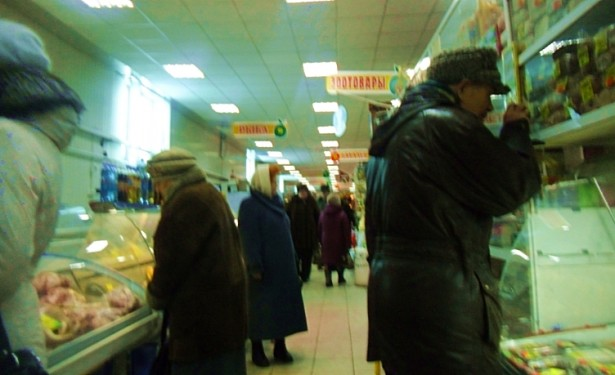
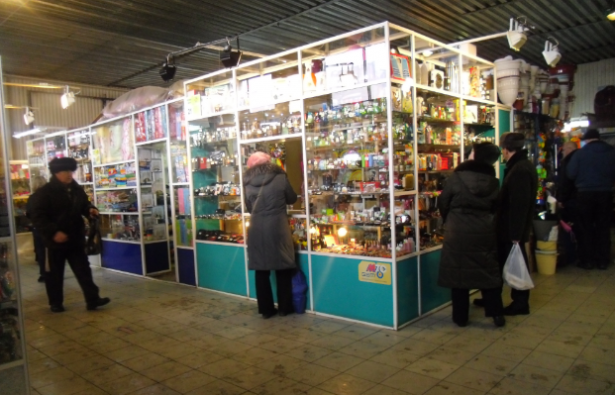
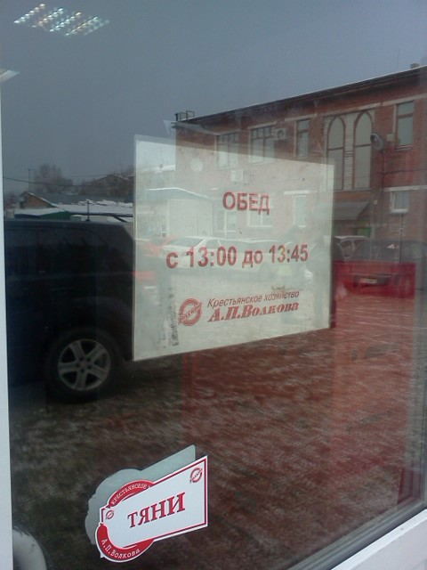

В целях профилактики заболеваний, передающихся через стул, решил сегодня посетить магазин необычным для себя способом — пешком. В ожидании открытия Метро захотелось посмотреть чем богаты прилавки социального рынка на пересечении улиц Сибиряков-Гвардейцев и Терешковой.
Выводы следующие.

Непосредственным плюсом социального рынка является… Не нашёл я у социального рынка, если честно никаких плюсов. Наверняка люди с выгодой и удовольствием тарятся на рынках молоком, мясом, яйцами. Но ни то, ни другое, ни третье не составляют основу моего рациона, поэтому выгоды и широты ассортимента оценить не смог.

Из «стартовых» продуктов купил разве что мороженую сёмгу. Солить её самому гораздо выгоднее, чем покупать готовую. Ну и есть впечатление, что полезнее. Продавец еще настойчиво предлагала охлаждённую сёмгу. Я ей возразил, мол охлаждённую вряд ли разумно по деньгам возить, наверняка она замороженная, а потом размороженная. Но продавец сказала, что возят уже два года самолётом из Норвегии в пенопласте. Привозят по пятницам-субботам, вплоть до того, что постоянным клиентам звонят когда поступление. Я бы может и проверил, но рыба продаётся только целиком, а тратить ~1500 рублей только на рыбу сегодня не очень хотелось.
Фруктов на социальном рынке ассортимент небольшой. Чернеющая уже хурма, аккуратно перевёрнута красивым боком наверх, мандаринов таких чтобы кожура сама отставала нету. Цены на всякие сосиски, молоко в бутылках такие же как в магазинах.
За шоколадками идти на социальный рынок мне казалось глупостью, поэтому купил для продуктовой корзины листья брусники и ягоды ежевики. Здоровое питание, всё-такое. Бруснику заварю завтра в термосе, а ежевика не понравилась. Стоит в тарелке. Раскисла вся такая.
Удивила табличка «Закрыто на обед» на двери магазина Волкова(колбаса) и Евдокимова(«Пышка»). Я наивно полагал, что обед в магазине остался в далёких восьмидесятых.

На рынке естественно не принимают карточки. Я уже отвык как-то считать сколько надо каких купюр для покупки, поэтому расстраивался. Еще заметил, что десятки практически вышли из обращения. Даже 80 рублей с сотни сдадут монетами.
Постоянная необходимость доставать кошелёк и пересчитывать деньги выливается еще и в постоянном чувстве тревоги. Кажется что кто-нибудь если не кошелёк, то телефон точно у тебя вытащит. В магазине такого нет.